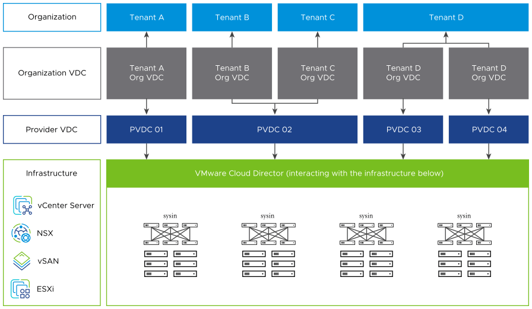

请访问原文链接：VMware Cloud Director 10.6.1.2 - 领先的云服务交付平台 查看最新版。原创作品，转载请保留出处。
作者主页：sysin.org
VMware Cloud Director 10.6.1.2 | 05 DEC 2025 | Build 25086345 (installed build 25088252)
VMware Cloud Director 10.6 | 27 JUN 2024 | Build 24055916 (installed build 24055813)
VMware Cloud Director 10.5.1 | 2023 年 11 月 30 日 | 内部版本 22821417 (已安装内部版本 22821164)
VMware Cloud Director 10.5 | 2023 年 7 月 18 日 | 内部版本 22080047（已安装内部版本 22080476）
VMware Cloud Director 10.4 | 2022 年 7 月 14 日 | 内部版本 20079248（已安装内部版本 20079017）
VMware Cloud Director 10.3 | 2021 年 7 月 15 日 | 内部版本 18296069（已安装内部版本 18295834）
VMware Cloud Director 10.2 | 2020 年 10 月 15 日 | 内部版本 17029810（已安装内部版本 17008054）
VMware Cloud Director 10.1 | 2020 年 4 月 9 日 | 内部版本 15967253（已安装内部版本 15967236）
vCloud Director 10.0 for Service Providers | 2019 年 9 月 19 日 | 内部版本 14638910（已安装的内部版本 14636284）
VMware Cloud Director 也称为 VCD，是一个云服务平台，可通过自助服务模式提供安全、隔离、弹性的虚拟数据中心计算、网络、存储和安全资源。VMware Cloud Director 会从底层虚拟基础架构中获取其资源。在 VMware Cloud Director 中注册 vSphere 资源之后，您可以为组织分配这些资源以供使用。
VMware Cloud Director 的云资源与以下基础架构进行交互。

新增功能
VMware Cloud Director 10.6.1.2 | 2024 年 12 月 5 日 | Build 25086345 (installed build 25088252)
Bug fixes and updates：
VMware Cloud Director 版本 10.6.1.2 的发布提供了多项错误修复，并更新了 VMware Cloud Director 设备的基础操作系统以及 VMware Cloud Director 的开源组件。
VMware Cloud Director 10.6 | 2024 年 6 月 27 日 | Build 24055916（installed build 24055813
VMware Cloud Director 版本 10.6 包括以下功能：
- 三层租户
- VMware Cloud Director 10.6 需要使用 PostgreSQL 13 或更高版本
- 容器资源和应用程序的管理
- 全局目录
- 对 VMware Cloud Director 设备节点提供 IPv6 支持
- 多个 VM 快照
- 提升规模限制
- Photon OS 4.0
- 提高了 VM 模板实例化性能
- 租户管理员 IP 预留系统
- 部署 Avi 控制器和 NSX Cloud 连接器的全新 UX
- 租户可自助对 NSX Advanced Load Balancer 使用自定义运行状况监控器
- 租户可以摄取和查看安全日志
- 提供者网关和 Edge 网关上的 IPsec VPN
- 此版本解决了 CVE-2024-22272 安全漏洞
- 新增功能 - 对提供者用户创建的租户运行时定义的实体 (RDE) 进行了更改
- 新增功能 - 无中断证书管理合规性
什么是 VMware Cloud Director
VMware Cloud Director 是一款领先的云计算服务交付平台，一些全球最受欢迎的云服务提供商利用它成功地运维和管理云计算服务业务 (sysin)。云服务提供商使用 VMware Cloud Director 向全球数以千计的企业和 IT 团队安全、高效地交付弹性云计算资源。
VMware Cloud Director 是一个云服务平台，以自助服务模式提供安全、隔离、弹性的虚拟数据中心计算、网络、存储和安全。
功能特性
领先的托管公有云和私有云服务交付平台
为全球数千家企业和 IT 团队提供安全、高效、弹性的云资源。使用 VMware Cloud Director 运营和管理成功的托管公有云和私有云服务业务。
VMware Cloud Director 功能特性
三层租户模型
VMware Cloud Director 使云提供商能够通过其直观的用户界面（称为三层租户模型）设计复杂的组织层次结构。此模型允许提供商创建由多个层组成的分层结构，每个层具有不同的管理权限。具体来说，提供商可以建立子提供商组织，这些组织是在父组织内运营的自治实体。
数据解决方案即服务
通过适用于 VMware Data Services（DSE）的 VMware Cloud Director 扩展提供增强的 Data Solution Services。该平台通过 DSE 为消息传递和数据库软件服务提供多租户支持。
VMware Cloud Director 加密管理解决方案
Thales CipherTrust Manager 将企业密钥管理和“自带加密即服务（BYO EaaS）”无缝集成到 VMware Cloud Director 中。
弹性安全虚拟数据中心
策略驱动的计算、存储、网络和安全方法可确保租户安全地隔离虚拟资源、独立的基于角色的身份验证以及对其公有云服务的精细控制。
多站点管理
跨站点和地理位置扩展数据中心;通过具有多站点聚合视图的直观单一管理平台监控资源。此外，还可以连接到现有的专用 vCenter 进行管理和访问，或载入 VMware Cloud Director。
蓬勃发展的 ISV 生态系统
领先的软件供应商，包括云原生、备份（如 Dell Data Protection 和 Veeam）、DRaaS、安全合作伙伴（如 Palo Alto）、存储（如 Cloudian、Dell ECS 和 AWS S3）等，使用我们的开放式可扩展性框架与 VMware Cloud Director 原生集成。我们使 VMware Cloud 服务提供商能够提供差异化的客户体验并抓住更多服务机会。
DRaaS 工作负载保护
为您的 Cloud Director 客户提供自助式分层灾难恢复即服务（DRaaS），适用于本地到云和云到云。使用最新版本 vSphere 的所有客户现在都可以查看经过 DRaaS 验证的合作伙伴 (sysin)，并轻松部署保护其本地工作负载所需的设备到 VMware Cloud Director 云中。
云迁移
使用适用于 Cloud Director 的 VMware Cloud Director Availability 插件实现到云的简单迁移，从而提供到 Cloud Director 云的自助冷或暖迁移。客户可以自行进行冷云或暖云迁移，无需复杂的架构、网络连接和安全转换，从而受益于 vSphere 目标端点。
运营可见性和洞察
焕然一新的仪表板和单一管理平台提供集中式多租户云管理视图。利用 VMware Aria Operations 高级分析、计费以及与 VMware Cloud Director 的原生集成，实现租户环境的深入可见性和自定义报告。
开发就绪型基础设施
VMware Cloud Director 为开发人员提供了一个很好的平台来构建和运行应用，而无需担心底层基础架构。通过 Container Service Extension，该平台原生为 Tanzu Kubernetes Grid（TKG）和 TKG Integrated 提供多租户 Kubernetes 支持，从而为开发人员提供更大的灵活性 (sysin)。开发人员可以通过 Content Hub 通过目录和 Helm 存储库访问数百个经过安全测试和验证的应用程序，从而更快地部署应用程序，无论是在 VM 上还是在容器上。
自动化
通过与领先的自动化工具和开源 vCD Terraform Provider 深度集成，VMware Cloud Director 使云提供商能够自动执行复杂的基础架构即代码和平铺 UI 驱动的工作流，以部署 X 即服务，同时保持访问控制和可见性。
增强的安全性
通过增加对虚拟可信平台模块（vTPM）设备的支持，提高虚拟机的安全性，为来宾操作系统提供额外的安全层。通过启用 vTPM，您可以保护虚拟机免受未经授权的访问、篡改和其他安全威胁。借助这一尖端功能，您可以更加安心，因为您的虚拟机是完全安全的。
GPU 即服务
VMware Cloud Director 通过 Nvidia AI Enterprise 为寻求 GPU 特定应用程序提供高性能计算的客户提供多租户 GPU 服务。在 VM 或 Tanzu 集群上运行高性能 AI/ML 应用程序 (sysin)。这可以通过适用于 AI/ML 的相关、受支持和调整的 NVIDIA AI Enterprise 应用程序（如 TensorFlow、Mxnet、Dkube、Cognitive Assistance、Dask Parallel Computing 等）进行补充。了解更多：了解 VMware Cloud Director 的 vGPU 功能。
安全云
VMware Cloud Director 还支持多种以安全为中心的功能，提供企业级托管私有云和公有云服务。为了帮助防止恶意软件，VCSP 可以利用 NSX-T 分布式防火墙来保护东西向流量。此外，可以定义动态组和成员资格标准，以防止将来暴露自动保护（安全解决方案）。他们可以使用单个控制平面部署 IDS 和 IPS，使用 NSX Intelligence 集中所有数据收集和分析，以实现完全安全的地位。客户可以选择加密工作负载，以防止在没有密钥的情况下访问它们。通过集成的 Disaster Recovery 复制，可以在站点上或站点之间保护数据。
下载地址
VMware vCloud Director 10.0 for Service Providers：
VMware Cloud Director 10.1：
VMware Cloud Director 10.2：
VMware Cloud Director 10.3:
VMware Cloud Director 10.3.3：
- 百度网盘链接：
[EoD]
VMware Cloud Director 10.4：
VMware Cloud Director 10.4.1：
- 百度网盘链接：
[EoD]
VMware Cloud Director 10.4.2：
- 百度网盘链接：
[EoD]
VMware Cloud Director 10.5：
百度网盘链接：https://pan.baidu.com/s/1w0vrnx2OAQO7ZJE3lFLfCQ?pwd=?<专享>
VMware Cloud Director 10.5 - Virtual Appliance Installation or Migration
File size: 2 GB
Name: VMware_Cloud_Director-10.5.0.9946-22080476_OVF10.ova
Release Date: 2023-07-18
SHA256SUM: 01b9a282379e173a9a528ab6d729bd175c249ebe3c78a246ae06cc0497f4aea1VMware Cloud Director 10.5 - Virtual Appliance Update Package
File size: 1000.51 MB
Name: VMware_Cloud_Director_10.5.0.9946-22080476_update.tar.gz
Release Date: 2023-07-18
SHA256SUM: 397fdebd40837783c40c852c18b07a2de0ae46de5756c856d0cc297fd5a3f2b8VMware Cloud Director 10.5 - Binary for Linux Installation or Upgrade
File size: 720.93 MB
Name: vmware-vcloud-director-distribution-10.5.0-22080476.bin
Release Date: 2023-07-18
SHA256SUM: 34f1fff41e2b02e4346e6bfbdcefc3fbeaaf33510b81f1fdcc5631f5b1a0712d更新了以下 Plug-in 和 Extension：
- VMware vRealize Orchestrator Plug-in for Cloud Director 10.5, 2024-03-12
- VMware Cloud Director Object Storage Extension 3.0, 2024-03-14
- VMware Cloud Director extension for VMware Data Solutions 1.4, 2024-02-29
VMware Cloud Director 10.5.1
VMware Cloud Director 10.6：
百度网盘链接：https://pan.baidu.com/s/1w0vrnx2OAQO7ZJE3lFLfCQ?pwd=?<专享>
VMware Cloud Director 10.6 - Virtual Appliance Installation or Migration
File name: VMware_Cloud_Director-10.6.0.11626-24250702_OVF10.ova
Size: 2.38 GB
Last Updated: Jun 26, 2024 01.54PMVMware Cloud Director 10.6 - Virtual Appliance Update Package
File name: VMware_Cloud_Director_10.6.0.11510-24055916_update.tar.gz
Size: 1017.35 MB
Last Updated: Jun 26, 2024 01.59PM
VMware Cloud Director 10.6.1
VMware Cloud Director 10.6.1.2 | 05 DEC 2025

文章用于推荐和分享优秀的软件产品及其相关技术，所有软件默认提供官方原版（免费版或试用版），免费分享。对于部分产品笔者加入了自己的理解和分析，方便学习和研究使用。任何内容若侵犯了您的版权，请联系作者删除。如果您喜欢这篇文章或者觉得它对您有所帮助，或者发现有不当之处，欢迎您发表评论，也欢迎您分享这个网站，或者赞赏一下作者，谢谢！
 支付宝赞赏
支付宝赞赏  微信赞赏
微信赞赏赞赏一下
敬请注册！点击 “登录” - “用户注册”（已知不支持 21.cn/189.cn 邮箱）。 请勿使用联合登录（已关闭）。